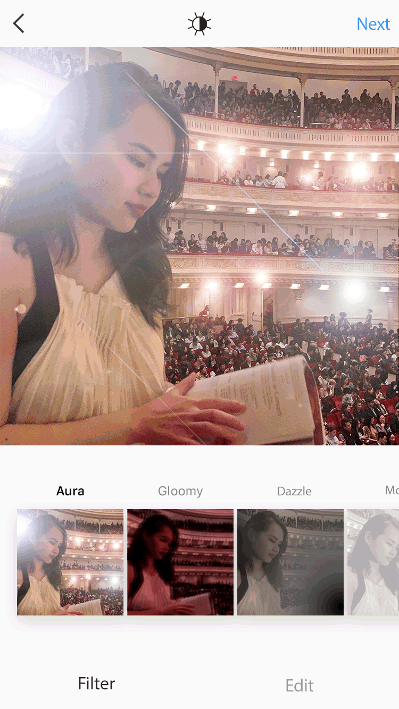

Question
How to engage the population of normal vision, and educate them about vision impairment?Conceptualization
There are many amazing and accessible vision impairment simulation tools, however, most of them are only being used by designers, educators or others that are working with vision impaired population.- Access of platforms that are being used by people with normal vision primarily.
- Surprise them! Most people usually wouldn’t engage topics that do not generate interest to them.
- When people are scrolling through the filters to apply to their photos, they will be puzzled at first about the weird, unpleasant and discolored filters, but soon people will realize that it’s a “simulation” of various vision impairment.
Keywords: raise awareness, educational, accessible
Development
Taking the current Instagram user interface, all filters will be replaced by the simulations of various types of vision impairments.
-
Features
- User can adjust the intensity of the simulation filters
- Data display: you can see how many people on Instagram has posted photos using the filter, and how many people on earth are affected by that specific visual impairment
- Learn more about the type of vision impairment by clicking on the filtered photo.
- Option to donate to your local vision impairment charities by using the filters.
Outcome
 You wake up, pick up your phone and opens up Instagram just as usual.You start to notice something different about the photos you are seeing. They look kind of odd, weird.
You wonder what is going on, you start to navigate through Instagram and found out the Instagram filters look different from what you remembered.
You picked a photo, and started to apply different filters. After you post a photo with Aura filter, you realized the odd, overly intense halo and glare filter is actually a simulation of this visual impairment.
You post the photo, you start to wonder, how many people have these “crazy filters” in real life that they have to deal with on a daily basis?
You wanted to learn more about halo and glare.